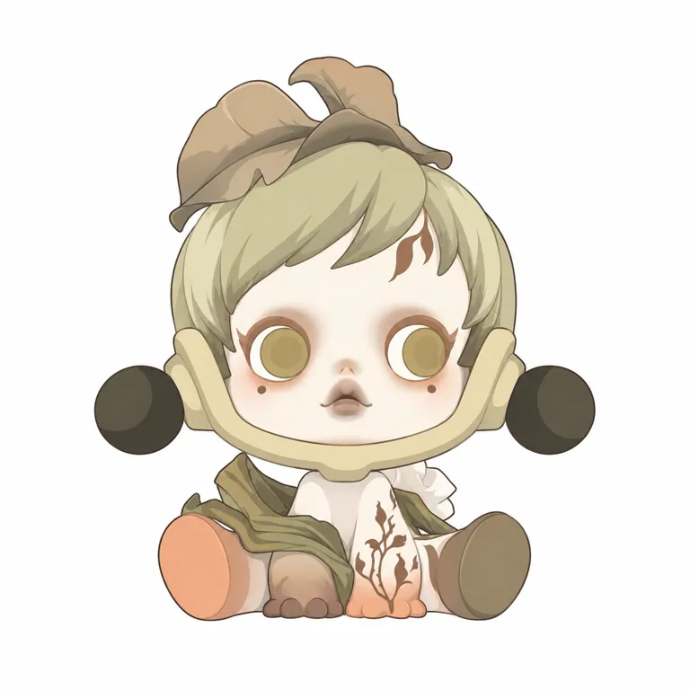
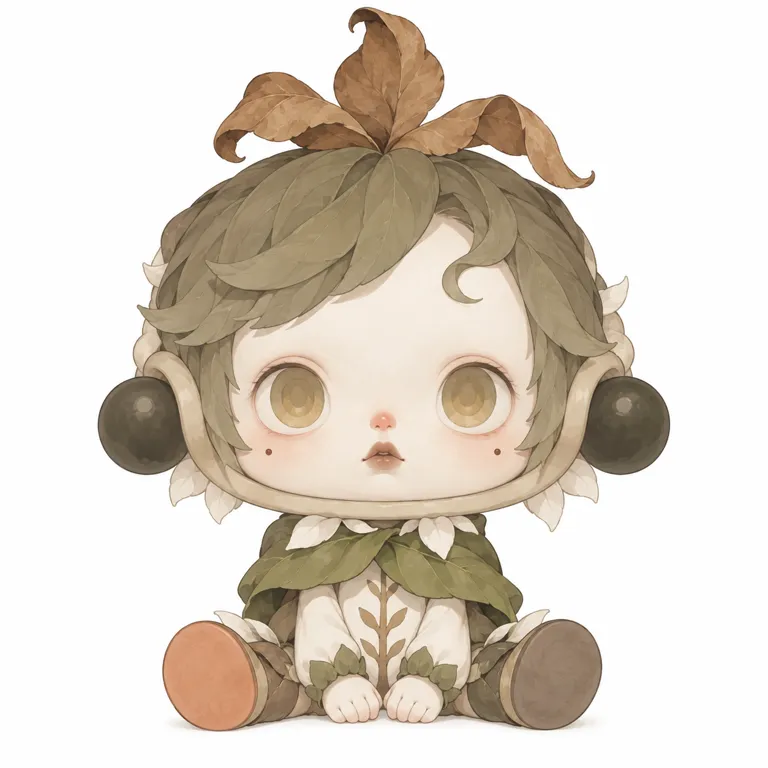
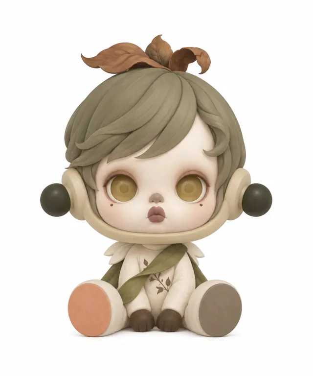
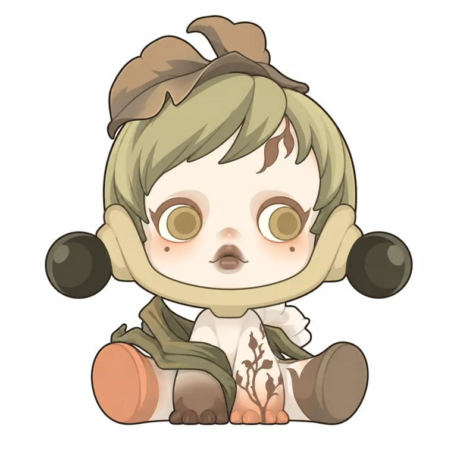

OIRON / IP STUDY · 2026.10.19
SKULL
PANDA身份、情绪与平面实测
让同一张脸，
容纳不止一种自我。
从艺术家角色到系列商品，研究识别如何保留、情绪如何变化，以及这些机制有什么证据支持。
单角色 · 艺术家潮玩标准研究
查看四轮平面实测 ↓查看商业证据
原图外链引用 · [A06]
01 / RESEARCH
一个角色，不止一种自我。
SKULLPANDA 是熊喵创作的单角色体系。不同款式并不自动等于不同成员；它的变化来自所处世界、情绪和身份。官方叙述更接近持续的自我探索，“暗黑酷女孩”只是其中一种读法。[S01] [A01]
艺术家 IP ≠ 买断证明
财报将其列入自主产品中的艺术家 IP。作者、品牌运营与财报分类可核，合同的期限、地区、分成和独占范围未知。[A04]
标准研究 · 平面优先
7 个视觉样本、4 轮出图、20 个来源。实测只锁定 The Forest 正面，不拼成虚构的“基础版”。
| 时间 | 可核节点 |
|---|---|
| 2018 | 作者创作角色；是创作履历年份，不是首个盲盒或版权登记日期。 [A01] [S01] |
| 2020 | 万圣节前与泡泡玛特首次合作推出《密林古堡》。精确首发日未核。 [A02] |
| 2022 | 《温度》把闭眼、休息和日常动作带入系列；采访提及11月10日，现美国页标12月29日发售。 [S02] [S05] |
| 2023–2024 | 《Ink Plum Blossom》与《The Sound》分别以植物意象、情绪变化组织款式。美国页日期为2023-11-03、2024-06-28。 [A06] [A07] |
| 2025 | 扩展到You Found Me!毛绒挂件；新加坡展官方公告将体验与限定周边购买连接。 [A09] [A01] |
| 2026-08 | 公司公布2026上半年业绩；SKULLPANDA按IP收入15.51211亿元。 [A05] |
02 / RESEARCH
允许变化，才有系列的空间。
“我可以有很多种样子，
不必一次定义自己。”研究归纳 · 不是官方口号
不必一次定义自己。”研究归纳 · 不是官方口号
作者访谈强调自由、矛盾与不被简单定义；运营团队也明确指出暗黑仅是表达的一面。《温度》转向休息与日常，《声响》用不同情绪命名款式。系列变化因此不只是换服装，而是替同一角色设置不同的心理状态。[S02] [A06]
01 同一个角色，可以承载互不相同的自我状态。
作者探索身份的定位与Sound情绪命名、Warmth日常动作相互对应。 [S01] [S02] [A06]
推断边界：能说明系列的组织逻辑，不能证明这是收入增长的独立原因。
02 识别保留在脸部关系，主题可以在头饰与材质上变化。
V01–V06都可见大头、紧凑鼻口与突出唇部；闭眼、睁眼、头盔及配色存在变体。 [A06] [A07] [A09] [S05]
推断边界：不是每款必须带双球，未做盲测识别率；摄影与供给也影响吸引力。
03 把情绪从陈列物带到随身使用。
手办、毛绒挂件、包与镜子在官方产品体系中共存。 [A06] [A09] [A10] [A11]
推断边界：证明载体扩张；各品类销量、复购与用户动机未知。
| 观察层 | 可以提出的假设 | 本轮没有证明 |
|---|---|---|
| 场景 | 在桌面、挂包与随身物品上选择当下喜欢的状态。 | 真实使用频率、购买路径与转化率。 |
| 矛盾 | 既想被识别，又不愿一直被一种性格标签固定。 | 这是消费者共同需求，或消费者亲口表达。 |
| 关系 | 角色提供承接情绪的容器，表情留白允许个人理解。 | 任何颜色、表情必然导致购买或复购。 |
| 内容 | 系列、展览与产品形成身份探索的不同入口。 | 叙事丰富自动保证长生命周期。 |
03 / RESEARCH
从具体图像，拆到识别关系。
原图与研究生成图分开标记。以下原图均为外链引用，可打开来源；图片失效时仍可查看观察记录。比例只作视角估计，不是官方工程参数。


04 / RESEARCH
不变量，要经得起例外。
| 层次 | 跨图观察 | 边界 |
|---|---|---|
| 常见身份锚点 | 大额头和饱满颊部、紧凑鼻口与突出短唇；常见护框及横向球形模块。 | V04摘盔；V05毛绒圆垫。不能规定每款永远戴同一个头盔。 |
| 表达连续性 | 安静、疏离、内省是部分款式的共同读感。 | Joy更外展；官方定位也不要求所有款都面无表情。 |
| 系列变量 | 睁闭眼、眼妆、刘海、冠饰、衣装、体色、道具、姿态。 | 不要将The Forest的金眼、眼下痣与叶冠写成全IP必备。 |
| 载体适配 | 硬质手办适合复杂体块；毛绒强调外壳触感与较大的脸部窗口。 | 未触摸实物；不从照片断言具体柔软度、耐久或承重。 |
头脸与结构：本轮 The Forest
叶冠—顺滑斜分短发—卵圆脸—U形护框构成纵向层级；黑球向两侧打开。金色圆眼盘下方布置小痣，鼻口集中、唇部突出；坐姿身体短，脚底与前方小手形成低重心。后背、挂点与内部连接看不到，保留未知。[A07]
2021 采访称双侧部件为球型辫子，2022 采访使用耳球及头盔的装备解释。本页采用“双侧球形模块”，保留历史叫法差异。[S03] [S02]
| 识别检查 | 本轮状态 |
|---|---|
| 去掉装饰 | 摘盔的V04提供反例：脸部关系仍有识别作用；未做盲测。 |
| 剪影／缩小 | 有横向双球与大头小身的观察判断，未进行独立用户识别测试。 |
| 换色 | 多系列颜色差异显著；支持固定单一签名色不是必要条件，不能证明任意换色都成立。 |
| 头像裁切 | 脸部与护框可作锚点，但本轮实测为全身坐姿，不宣称头像场景也已通过。 |
单款色板 · The Forest
奶油白
#EEE8D5脸和胸腹灰橄榄
#AAA782短发与折叶枯叶褐
#A68C69头顶卷叶与身体细纹暗橄榄
#41443B左右球浅卡其
#C9C49EU形护框桃橙
#D99476画面左鞋底上述色值为屏幕目测近似。金色眼盘、护框和球的面积关系优先于某个HEX；背景白与摄影反光不属于固定角色配色。
05 / RESEARCH
从观看，到携带和使用。
按官方规格读商品，而不是把拍摄观感写成工艺事实。下表均为美国页面；发售日期不能自动外推成全球首发，美元列价不是国内售价或采购成本。
| 产品 | 页面发售日 | 美国列价 | 规格与边界 |
|---|---|---|---|
| Ink Plum Blossom手办 | 2023-11-03 | US$19.99 | 高3.14英寸；ABS／金属件／磁铁／PVC；整盒12款不重复。 [A07] |
| The Sound手办 | 2024-06-28 | US$19.99 | 高3.94英寸；ABS／PVC／磁铁；整盒12款不重复。 [A06] |
| The Mirage手办 | 2025-04-03 | US$21.99 | 高11.4cm；PVC／ABS／电子元件；整盒9款不重复。 [A08] |
| You Found Me!毛绒挂件 | 2025-09-11 | US$29.99¹ | 不含挂绳高13.5cm；外层PVC／ABS／聚酯，填充聚酯。 [A09] |
| The Sound肩包 | 2024-06-28 | US$31.99 | 12.6×14.17×4.72英寸；外层50%PU／50%HDPE，里料涤纶。 [A10] |
| The Sound手持镜 | 2024-06-28 | US$12.99 | 5×6.5cm；TPU／ABS／合金。 [A11] |
¹ 毛绒挂件29.99美元来自当前合集页；其它价格来自同站商品相关推荐。页面读取日2026-10-19，结算税与库存未核。[S04]
06 / RESEARCH
商业规模成立，原因不能偷换。
以下是 POP MART 集团按 IP 确认的收入。它不是全球 GMV、授权金、作者个人收入或利润；公司各品类总收入也不能直接全部分给 SKULLPANDA。
| 报告期 | 原表：人民币千元 | 换算：亿元 | 集团占比 | 可比增长 |
|---|---|---|---|---|
| 2024全年 | 1,308,262 | 13.08262 | 10.0% | — [A03] |
| 2025全年 | 3,539,542 | 35.39542 | 9.5% | 较2024全年 +170.6% [A04] |
| 2025上半年 | 1,220,504 | 12.20504 | 8.8% | 作为半年同期基数 [A05] |
| 2026上半年 | 1,551,211 | 15.51211 | 9.0% | 较2025上半年 +27.1% [A05] |
收入增长与占比下降可以同时发生。2025年收入上升，而集团占比从10.0%变为9.5%；不能仅凭占比写衰退。2026半年只对比上一年同期，不与全年直接计算同比。
同比由原表未四舍五入数字计算。2026中期业绩未经审计；2024原表p26、2025业绩p33、2026中期p30。未测消费者动机，不能把增长单独归因“颜值”“稀缺”或“情绪价值”。单SKU销量、版税、利润、复购均未知。
08 / RESEARCH
能增长，也会遇到具体问题。
餐桌系列品牌错印
扬子晚报记者在国金中心门店查看样品，发现头后“POP MART”印为“POP MAET”；店员称前晚接到下架通知。[A13]
只支持样品错印及店员说法；不能扩写为全部批次、全球召回、赔偿完成或销量损失。
审美并不普遍一致
未来网报道部分家长不喜欢幽暗、骷髅等元素，同时有买家喜欢其差异性。[A14]
不是代表性调查，不推出总体差评率或心理伤害因果。
体验与购买绑定
新加坡展限定周边须持票参观后购买，每票每款限1，优先机会不保证库存。[A01]
是已公开购买门槛；本轮没有证明普遍不满或黄牛套利。
美国站售后商业规则对不喜欢款式、非整盒重复款及跨区域售后设有限制，同时保留适用法下不可放弃的消费者权利。本页只记产品政策，不作中国消费者法律结论。[A12]
09 / RESEARCH
平面实测：近似不等于无条件可用。
目标锁定：V01《The Ink Plum Blossom》中的 The Forest，400×400官方商品正面。任务为将已见正面转成二维研究图，不是整个IP基础设定，不是创作者原始提示词，也不能证明原作由AI制作。
纯文字：未通过参考辅助 V2：正面二维范围接近实物／原创：未进入

不是官方二维设定；依赖左侧原图。
最终版本的头冠、斜分短发、护框双球、眼盘、小痣、坐姿与左右配色已接近；眼尾、唇边与叶脉仍有轻微简化。此结论是研究者逐项目检，不是用户盲测、数值相似度或稳定性保证。
已实测正式文本 · 中文 · 必须附 V01 原图
执行时使用官方原图作为唯一参考。不要用下方文字单独执行，再引用本图声称纯文字已验证。
下载原文依据输入的唯一参考图片，将其中坐着的单独角色忠实转绘成二维平面彩色角色插画。保留参考中的外轮廓、各部件大小、相对位置、非对称姿态、头脸比例、眼睛形状、嘴型、发型、头饰、服装纹路和每块颜色的对应关系，不重新设计角色。 先核对这些身份锚点：头顶紧凑的褐色卷叶冠；偏灰黄的顺滑短发，斜分大片刘海和右额小卷发；略纵长但下颊饱满的奶油白脸；两个卡其金色大圆眼盘及窄米白眼圈，无黑瞳和睫毛；两眼下面各一颗痣；紧凑而深色的小鼻与灰棕嘟唇；贴脸环绕下巴的浅卡其U形护框；低位的左右暗橄榄黑球；极短坐姿身体；白色胸腹的细棕色枝纹；横搭胸前的折叶；画面左侧桃橙鞋底和右侧灰褐鞋底。不要将头发变成真叶片，不要添加围脸的白花瓣、巨大的树冠或新衣服。 仅改变表现媒介：清晰细线勾勒，平整色块，最多两档硬边阴影；不要保留产品照片的立体反光、渐变照明、投影和塑料表面纹理，不画成三维人偶摄影。保持参考原来的正面略有偏转的观察角度，不把不对称结构修成完全对称，不推演侧面或背面。全身完整，正方形纯白底，角色占画面高度约76%，留足页边。没有文字、标志、边框、摄影场景或额外道具。这是对已见商品正面的二维研究转绘，不是新角色设计，也不是原作的官方二维设定。 进一步约束：不要把眼外侧画成尖锐上翘的眼线或睫毛，保留原图柔和的棕色眼窝；嘴唇宽度只约为单眼虹膜直径的六成，上唇小而尖，下唇短圆，唇边不用外延笑线。严格沿用参考的卵形脸与左右不完全对称的眼部位置。头顶卷叶大小和弯曲方向完全以输入图为准；不要扩大双球，不把球面做成有高光的玻璃球。用细棕灰线而不是粗黑卡通描边。必须保留画面左右各至少15%的空白，角色全高不超过画布高度的78%。
保留失败，不替换记录

纯文字 V1 · 未通过
头发被画成叶片；叶冠过高，脸过宽；额外花瓣和披风改变了身份。
下一步：叶片语义扩散；修为顺滑短发、紧凑叶冠与局部折叶。
查看当次完整文本
绘制一张单独角色的二维平面彩色研究插画，正方形白底，细暖灰轮廓线，柔和而克制的色块，只有极少的平面阴影，不画摄影、三维渲染、文字、标志或场景。角色正面坐着，完整身体居中；整体是头巨大、身体很短的类人小偶，头部连顶部叶冠约占全高六成。脸是宽圆、下巴短的奶油白脸，额头宽，两眼位于脸中央偏下，是左右对称的圆形睁眼，米白眼白包着大的卡其金色虹膜，虹膜内只有淡棕圆盘层次，没有黑色瞳孔；眼尾无长睫毛。两侧脸颊各有一粒小棕痣，鼻尖小而微红，嘴唇为灰棕色、中央向前微嘟的小双弧唇，嘴略张、没有笑容。灰橄榄色短发侧分，几片宽叶状刘海横向覆住额头，额头右侧有一缕弯曲发梢；两侧发丝垂至脸颊。头顶是三片卷起的褐色枯叶。浅卡其色U形粗头盔边框从两鬓沿下巴绕过，左右耳位各接一颗独立的暗橄榄黑色圆球，圆球中心与下脸颊等高，球径约为脸宽四分之一；圆球不是头顶发髻。小身体坐在地面，两腿张开向画面左右，左侧鞋底是圆形桃橙色，右侧鞋底是圆形灰褐色。胸腹为米白色，中央有棕色向上分枝的叶脉纹；胸前横着一片长而折叠的橄榄绿叶片，绕向两肩。两只很小的手落在两腿之间，脸下和身体两侧有少量白色花瓣状领片。保留低饱和、落叶与奶油白的色彩关系，形体稳而安静，不加新的帽子、动物耳朵、武器、底座、光环或道具。下载这版提示词

纯文字 V2 · 未通过
发型有所收敛，但圆脸、鼻唇与身体仍偏通用娃娃；胸前叶带方向不同，结果仍像立体渲染。
下一步：纯文字未锁住具体脸部；单独测试参考图辅助，不宣称文字通过。
查看当次完整文本
一张二维色块角色研究图。白底，正面全身坐姿，角色占画面高度76%，四周充分留白；采用平整的轮廓色块与少量硬边阴影，不使用水彩纸纹、摄影高光或三维渲染。没有文字或场景。 造型是一只神情疏离、嘟唇的类人小偶。可见全高以100计：顶部小叶冠约占15，短发和圆脸头盔合计约55，短小坐姿身体约30。头颅不是横向扁宽脸，而是略纵长的圆卵形，颊部鼓，短下巴；脸宽约是全高的39%。奶油白皮肤，灰橄榄色短发，头发必须是顺滑成束的头发，不是叶片、羽毛或花。侧分刘海由四片宽而平滑的弧面组成，从画面左上向右扫；右额有一小缕独立下卷发梢。顶部仅三片低矮卷曲褐色枯叶，一片向左展开、一片向右弯回、一片小叶在后，整体帽饰宽不超过头宽的65%，不长成高树冠。两只大而圆的睁眼位于脸部中央偏下，眼外圈为柔和棕色眼窝，眼白是窄米白环；虹膜是卡其金色的大圆盘，内嵌稍深圆环，平视，无黑色瞳孔、无睫毛、无眉毛。两侧各一粒深棕小痣紧贴眼睛下方。鼻子短小，棕灰色小鼻翼。嘴在两眼正中下方，鼻口紧凑；灰褐色上唇双峰明显，下唇饱满，嘴中央是极短竖向暗色缝，神情无笑意，嘴角不向外拉。 浅卡其色U形粗护框从两鬓贴着面颊绕过下巴，两侧各一个厚而短的耳垫，再水平接一个暗橄榄黑圆球，球径仅是脸宽的24%，两球同高，球心对齐嘴部，不是耳朵或发髻。没有白色花瓣围绕头部。 身体极短，双腿向左右前方伸出，脚底直立朝前：画面左脚底为桃橙色圆面，右脚底为灰褐色圆面，脚底各宽约脸宽的30%。胸腹奶油白，在中央画不对称细小棕色枝叶图案。只用一条窄而折起的橄榄色长叶从画面右肩横搭胸前、再垂到左侧，不画密集树叶披风。肩后少量白色领片，手为深褐色很小的圆钝手，支在脚之间前方。下巴至脚底高度不超过头部高度的一半。不要额外动物耳、繁复植物、装饰底座。配色低饱和，身份重点是圆金色眼盘、短嘟唇、卵圆脸、浅色U形护框和低位双黑球。下载这版提示词

参考辅助 V1 · 未通过
头饰、短发、双球与非对称坐姿接近；描边偏粗，眼尾尖、嘴线延长，画面留白不足。
下一步：细化眼窝、短唇边与线宽要求，保持同一官方输入图。
查看当次完整文本
依据输入的唯一参考图片，将其中坐着的单独角色忠实转绘成二维平面彩色角色插画。保留参考中的外轮廓、各部件大小、相对位置、非对称姿态、头脸比例、眼睛形状、嘴型、发型、头饰、服装纹路和每块颜色的对应关系，不重新设计角色。 先核对这些身份锚点：头顶紧凑的褐色卷叶冠；偏灰黄的顺滑短发，斜分大片刘海和右额小卷发；略纵长但下颊饱满的奶油白脸；两个卡其金色大圆眼盘及窄米白眼圈，无黑瞳和睫毛；两眼下面各一颗痣；紧凑而深色的小鼻与灰棕嘟唇；贴脸环绕下巴的浅卡其U形护框；低位的左右暗橄榄黑球；极短坐姿身体；白色胸腹的细棕色枝纹；横搭胸前的折叶；画面左侧桃橙鞋底和右侧灰褐鞋底。不要将头发变成真叶片，不要添加围脸的白花瓣、巨大的树冠或新衣服。 仅改变表现媒介：清晰细线勾勒，平整色块，最多两档硬边阴影；不要保留产品照片的立体反光、渐变照明、投影和塑料表面纹理，不画成三维人偶摄影。保持参考原来的正面略有偏转的观察角度，不把不对称结构修成完全对称，不推演侧面或背面。全身完整，正方形纯白底，角色占画面高度约76%，留足页边。没有文字、标志、边框、摄影场景或额外道具。这是对已见商品正面的二维研究转绘，不是新角色设计，也不是原作的官方二维设定。下载这版提示词
遵循你的平面优先要求：本轮不继续实物生成或原创延展。英文、黑白找形、侧背面和重复稳定性均未测试；不会把中文参考辅助成功扩写为全部提示词可用。
10 / RESEARCH
可以借机制，不能照搬身份。
| 交给下一步 | 可借鉴 | 必须重新建立 |
|---|---|---|
| 表达 lab | 允许复杂状态共存，给系列持续变化的理由。 | 新的真实场景、矛盾、态度与用户关系；不自动沿用宇宙旅人。 |
| 找形 form | 区分稳定识别锚点与主题变量，保留远近细节层次。 | 独立轮廓、头脸比例与五官组合；不用护框双球嘟唇整组。 |
| 定型 studio | 按陈列／携带／日用选择载体，材料变化需重新验证。 | 连接、五官表现、量产约束与实物打样；图像不等于制造结论。 |
原创转译尚未立项，三阶段中英六类生成文本均未进入正式区。当前可以复用的是研究方法与证据，不是把原角色换色或换帽后当新IP。
保留的缺口
- 未取得作者与泡泡玛特合同，不断言版权买断、独占期限或分成。
- 首个合作系列为密林古堡；更早艺术家原作售卖记录与精确首发日未核。
- 单SKU销量、版税、利润、复购率、二级市场成交及2026全年收入未知。
- 指定小红书5图已读，但无可用评论；两组搜索被登录墙阻挡，不能构造代表性用户画像。
- 官方标准三视图、基础母版、背面与内部连接结构未取得；当款正面不代表整个IP标准设定。
- 纯文字V1、V2均未通过；参考辅助V2仅通过可见正面二维转绘的有限范围。
- 英文、重复稳定性、侧背面、实物概念与原创转译未实测，停留在平面阶段。
- 未取得餐桌错印事件的正式召回或最终处理结果；审美分歧个案不能量化总体差评率。
11 / RESEARCH
来源与证据边界。
核验截至2026-10-19。事实、作者／品牌自述、研究推断分别标注；同一访谈的转载只算同一来源家族。财报只阅读相关表与上下文，不声称逐页通读。
这是官方履历与展览规则，创作年份非版权登记日期；不证明成交量、参观人次、合同归属。
打开来源 ↗作者采访经转载，非原刊页面；首系列年份可用，未核精确首发日；不采用瞬时售罄数字或合同独占推断。
打开来源 ↗读取相关IP表与上下文，非逐页全读。集团财报按IP收入，不是全球IP总GMV、授权金、利润或作者收入；自主产品不等于版权买断。
打开来源 ↗年度业绩公告相关表已读，非逐页全读。集团口径按IP收入；非单系列销量；不据此推断版权合同。
打开来源 ↗2026半年未审计业绩公告；不能和2025全年直接计算增长，不能乘2冒充全年预测。已读相关表及上下文。
打开来源 ↗美国站页面规格与当前推荐列表价；不是全球首发证明、国内价格或销量。价格非结算页，税未核。
打开来源 ↗美国地区官方规格；款式表显示隐藏款不等于一整盒保证获得隐藏款。
打开来源 ↗材质写电子元件，不凭此推断每款的灯光、声效或交互功能。
打开来源 ↗当前正文未提取出价格；搜索摘要出现$36.99但未由可读正文重复核到，因此价格null。不把它当2025全年增长原因的独立因果证据。
打开来源 ↗商品类目为包袋，不是同尺寸搪胶公仔；美国站标价不做人民币汇率比较。
打开来源 ↗推荐栏静态价格非结算保证；正文规格不是镜面材质检测报告。
打开来源 ↗是当前美国站规则，不是中国法判断，不是SKULLPANDA特定投诉或不良率。规则可变；只解释随机购买及地区售后摩擦。
打开来源 ↗记者查到样品不代表全部批次；店员反馈不能扩写为全球召回；未找到正式召回公告或最终售后结果。文末2024小夜灯事件非已核同IP，不纳入。
打开来源 ↗这是有名有时的审美分歧案例，不是代表性用户调查；不采纳文中暗黑导致未成年人心理伤害的因果断言，不把全品牌投诉总量归属该IP。
打开来源 ↗作者及品牌自述；不当作消费者调查。
打开来源 ↗原采访的转载，作者定位与工艺表述为自述；仿陶瓷不等于基材为陶瓷。
打开来源 ↗采访中称两侧球型辫子；2022访谈称耳球。使用中性结构词，不裁定某一历史叫法错误。
打开来源 ↗当前美元列价，不是国内售价、成本或结算含税价格；新旧系列同列不等于热销排名。
打开来源 ↗美国页发售日2022-12-29，采访提及2022-11-10；地区与口径不同，不能当日期矛盾直接覆盖。
打开来源 ↗页面显示09-22辽宁，未显示年份；5图正文已读，评论区无可读评论；营销性数字逐项另核。
打开来源 ↗
小红书提供线索，不代替核验。
指定笔记《每天认识一个 IP｜SKULLPANDA》，作者“工位IP集（求关注）”，正文与5张图均已读。页面显示“09-22 辽宁”，年份未显示；评论区为空。观察到46赞、17收藏，仅代表当时这条笔记的互动，不是购买人数。[S06]
固定检索词“SKULLPANDA 品牌介绍”“SKULLPANDA 产品汇总”均尝试；当前浏览器显示“登录后查看搜索结果”。因此本轮没有新增搜索结果或可用于归纳购买动机的评论样本。